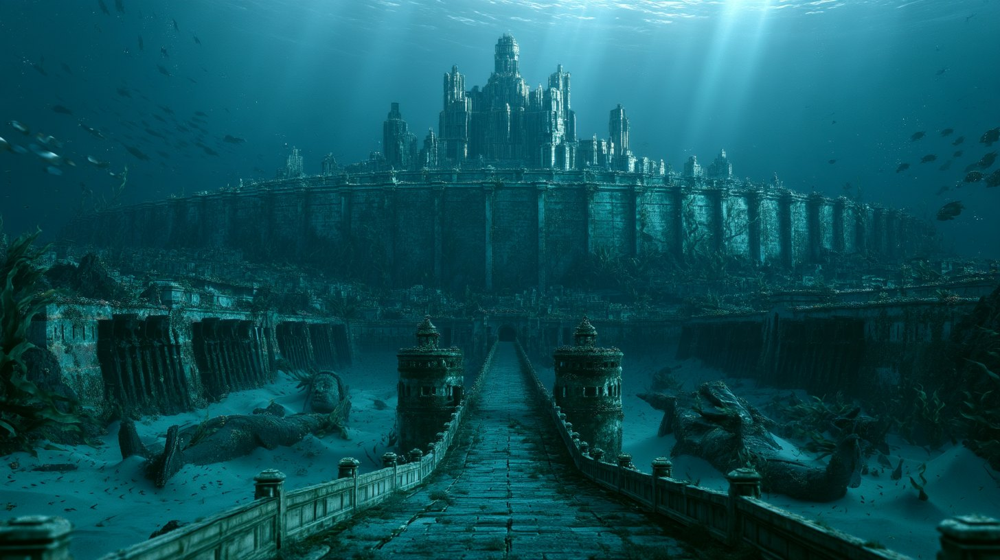

격렬한 지진과 홍수가 일어났고,
하루 낮과 하루 밤 사이에
아틀란티스 섬은 바다 깊이 가라앉아 사라졌다.
아틀란티스에 관한 기록은 플라톤의 두 대화편뿐이다.
이 도시는 그 글에 쓰인 만큼만 되살렸다.
가장 바깥 성벽은 청동으로,
두 번째 성벽은 주석으로 덮었다.
성채를 두른 세 번째 성벽은 오리칼쿰의 붉은 빛으로 번쩍였다.
길이 1스타디온, 너비 반 스타디온.
생김새는 낯설고 이국적이었다.
바깥은 온통 은으로, 꼭대기 장식은 금으로 덮었다.
신은 날개 달린 말 여섯 마리가 끄는 전차 위에 서 있었고,
머리가 천장에 닿을 만큼 거대했다.
플라톤의 『크리티아스』는 이 문장에서 끊긴 채 전해진다.
글이 끝나는 곳에서, 도시도 끝난다.